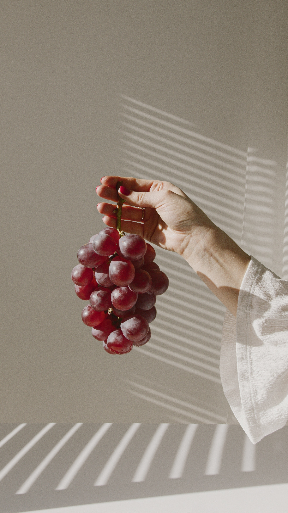
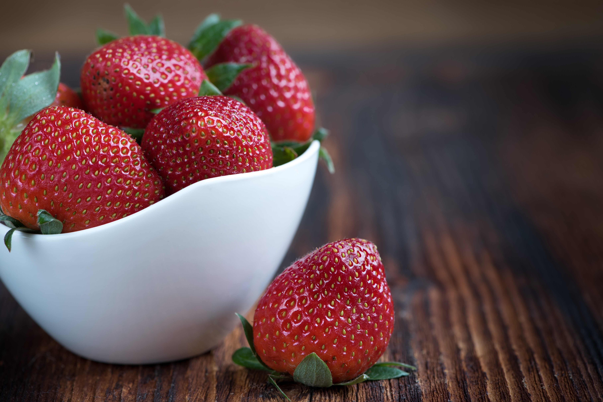

Eating apples is linked to a lower risk of many chronic conditions.
Eating grapes lowers blood pressure and improves bone health.
Eating oranges makes it easier to absorb iron to fight anemia.
Eating strawberries benefits the heart health
During difficult times, it's best to cut down on sweets like cookies, cake and candy. Satisfy your sweet tooth with fruit to help prevent blood sugar dips and spikes.
Karen Salmansohn
Subscribe with your email to get more information and facts about fruits every week